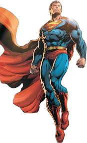
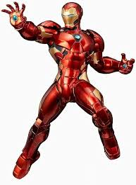
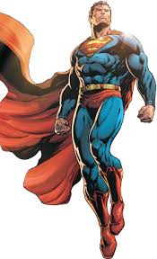

IronMan paragraph

BatMan Paragraph
SuperMan paragarph

Spider-Man is a superhero in American comic books published by Marvel Comics. Created by writer-editor Stan Lee and artist Steve Ditko, he first appeared in the anthology comic book Amazing Fantasy #15 (August 1962) in the Silver Age of Comic Books. He has been featured in comic books, television shows, films, video games, novels, and plays. Spider-Man's secret identity is Peter Benjamin Parker. Initially, Peter was depicted as a teenage high-school student and an orphan raised by his Aunt May and Uncle Ben in New York City after his parents, Richard and Mary Parker, died in a plane crash. Lee, Ditko, and later creators had the character deal with the struggles of adolescence and young adulthood and gave him many supporting characters, such as Flash Thompson, J. Jonah Jameson, and Harry Osborn; romantic interests Gwen Stacy, Mary Jane Watson, and the Black Cat; and enemies such as Doctor Octopus, the Green Goblin, and Venom. In his origin story, Spider-Man gets his superhuman spider powers and abilities after being bitten by a radioactive spider. These powers include superhuman strength, agility, reflexes, stamina, durability, coordination, and balance; clinging to surfaces and ceilings like a spider; and detecting danger with his precognition ability called "spider-sense". He builds wrist-mounted "web-shooter" devices that shoot artificial spider-webs of his own design, which he uses both for fighting and web-swinging across the city. Peter Parker Initially used his powers for his personal gain, but after his Uncle Ben was killed by a thief that Peter could not stop, he began to use his powers to fight crime by becoming Spider-Man
IronMan paragraph
BatMan Paragraph
SuperMan paragarph